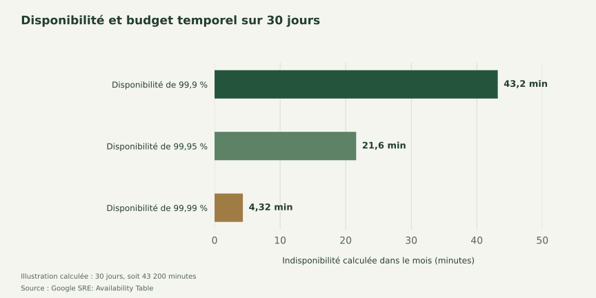

Une application métier peut ressembler à un seul site tout en dépendant d’un bureau d’enregistrement de domaine, d’un hébergement, d’une base de données, d’un stockage de fichiers, d’un service de courriels et de plusieurs API. Lorsque tout fonctionne, ces éléments restent discrets. Lorsqu’il faut déplacer le système, récupérer un dossier ou changer de développeur, ils deviennent des décisions d’entreprise.
Comprendre où réside votre logiciel vous donne une maîtrise concrète. Vous pouvez identifier les comptes nécessaires, décider qui y accède, préparer une reprise et comparer les propositions au-delà de leur première facture mensuelle. Il n’est pas nécessaire d’exploiter un centre de données pour poser les bonnes questions.
Ce guide explique l’hébergement cloud, la localisation des données, la propriété du logiciel, les sauvegardes, la fiabilité et la portabilité. Les listes de vérification présentent notre démarche recommandée. La documentation des fournisseurs soutient les distinctions techniques ; le graphique de disponibilité expose un calcul transparent, sans prétendre mesurer les performances d’un hébergeur.
Décrivez ce qui se passe lorsqu’un client visite l’application et accomplit sa tâche principale. Le domaine oriente son navigateur vers un service. L’interface se charge. Un serveur ou une API contrôle la demande. La base conserve les informations métier. D’autres systèmes peuvent envoyer un message, traiter un paiement ou générer un document.
Cette description devient une carte de l’application. Gardez-la suffisamment lisible pour le dirigeant. Chaque composant doit avoir une fonction, un propriétaire de compte, un contact opérationnel et une référence vers sa configuration ou sa documentation. N’inscrivez pas les mots de passe sur cette carte : indiquez où les personnes autorisées peuvent les retrouver de manière appropriée.
Incluez les services extérieurs au compte principal d’hébergement. Une application hébergée à un endroit peut envoyer les documents vers un autre fournisseur de stockage. Un formulaire peut dépendre d’un prestataire d’envoi. Une confirmation de paiement peut arriver par webhook. Ces connexions déterminent parfois la réussite d’une migration apparemment simple.
Vérifiez la carte avec une question d’assistance ordinaire. Si un client affirme avoir envoyé le formulaire, mais que personne ne retrouve sa demande, l’équipe peut-elle suivre le trajet et savoir où enquêter ? Une carte utile aide quelqu’un à agir ; une collection de logos ne suffit pas à expliquer le fonctionnement du service.
Avec un serveur virtuel, votre équipe gère généralement davantage d’éléments de l’environnement. Une plateforme applicative managée prend en charge une part plus importante de l’exécution. Avec un logiciel en abonnement, vous configurez habituellement un produit plutôt que de déployer son code. Ces catégories décrivent une répartition des responsabilités, sans établir un classement universel de qualité.
Le modèle de responsabilité partagée d’AWS distingue la sécurité de l’infrastructure cloud de la sécurité des usages et ressources du client. Les obligations de ce dernier varient selon les services choisis. Une infrastructure managée ne supprime pas la gestion des identités, des permissions, du comportement applicatif ou des données déposées.
Choisissez un modèle que votre équipe peut exploiter. Un serveur peu coûteux peut devenir cher si personne ne possède les mises à jour et la reprise. Un service managé peut être pertinent lorsqu’il retire une charge que l’entreprise ne sait pas soutenir. À l’inverse, un besoin particulier peut justifier davantage de contrôle et l’effort technique associé.
Demandez une répartition écrite : qui corrige l’environnement d’exécution, restaure la base, revoit les accès et intervient après un déploiement raté ? Des réponses claires permettent de comparer deux offres qui utilisent pourtant les mêmes termes rassurants à propos de sécurité et de fiabilité.
L’entreprise doit savoir quel compte contrôle son domaine, son hébergement, sa base, sa facturation, son dépôt de code et ses déploiements. Cela n’impose pas un accès administrateur à chaque salarié. Il s’agit de conserver un contrôle autorisé lorsque le prestataire change ou qu’un collaborateur quitte ses fonctions.
Privilégiez les comptes contrôlés par l’entreprise et les accès nominatifs lorsque la plateforme les permet. Activez une authentification multifacteur adaptée et maintenez une voie de récupération administrative. Un identifiant partagé dans une conversation complique l’identification des changements et le retrait propre d’un seul accès.
Séparez le travail quotidien de l’administration exceptionnelle. Un développeur peut avoir besoin de déployer sans contrôler le bureau d’enregistrement. Un chargé d’assistance peut consulter un dossier sans exporter l’ensemble des clients. Attribuez les permissions selon les tâches réelles et révisez-les lorsque les responsabilités évoluent.
Pendant la transmission, demandez à un représentant autorisé de réaliser une opération courante à l’aide de la documentation : inviter une personne, retrouver une sauvegarde ou consulter le dernier déploiement. L’entreprise peut posséder officiellement un compte tout en dépendant encore du savoir non documenté d’une seule personne pour l’utiliser.
La résidence des données concerne le lieu où certaines informations sont conservées. Le contrôle opérationnel concerne les personnes capables d’administrer le service et les systèmes qu’elles utilisent. Choisir une région européenne pour la base est significatif, mais ne décrit pas à lui seul l’assistance, les sous-traitants, les sauvegardes ou les intégrations externes.
Commencez par un inventaire : dossiers clients, pièces jointes, journaux, événements de mesure, sauvegardes et exports d’assistance. Cartographiez ensuite la destination de chaque catégorie. Le tableau de bord peut afficher la région de la base principale alors qu’un service de courriels ou de supervision traite ailleurs une autre partie du parcours.
Demandez la documentation actuelle et les conditions contractuelles applicables. Une formule commerciale ne répond pas entièrement à une exigence de conformité. Les obligations dépendent de l’activité, des données et des juridictions. L’architecture technique doit fournir des faits précis aux personnes compétentes en matière juridique ou de protection des données.
Pour cadrer le produit, distinguez les exigences essentielles des préférences de localisation. Vous éviterez de bâtir autour d’une hypothèse qui contredit ensuite une intégration de paiement ou un contrat client. Cette précision améliore aussi la discussion avec le fournisseur, au-delà d’une simple question sur le caractère local, souverain ou conforme du produit.
Un export de base constitue une partie de la reprise. L’application peut également dépendre des fichiers transmis, de la configuration, de clés de chiffrement, de paramètres et d’une version précise du code. Le plan doit identifier ces éléments et expliquer comment une personne autorisée peut reconstituer un service fonctionnel.
Définissez les objectifs de point de reprise et de délai de rétablissement dans le langage de l’entreprise. Le premier décrit la perte de données que l’organisation vise à tolérer. Le second exprime le délai visé pour remettre le service en fonctionnement. Ces objectifs nécessitent des preuves issues des sauvegardes et exercices réels.
Une entreprise fictive de rendez-vous peut estimer que perdre une journée entière de réservations créerait un travail de rapprochement inacceptable. Cette décision doit guider la fréquence des sauvegardes, leur conservation et les éventuels journaux de transactions. Elle doit également influencer la procédure manuelle utilisée pendant l’interruption.
Testez la restauration dans un environnement distinct. Contrôlez les dossiers, pièces jointes et permissions. Mesurez le temps et notez les étapes manquantes. Un tableau de bord peut confirmer l’exécution d’une tâche de sauvegarde ; un exercice de restauration apporte une preuve plus forte de la récupération utile. Recommencez après les changements importants d’architecture.
Un pourcentage de disponibilité n’a de sens qu’avec une définition du service réussi, une période d’observation et des exclusions. Les recommandations SRE de Google distinguent indicateurs, objectifs et accords de service. Une observation, une cible interne et une promesse contractuelle ne remplissent pas la même fonction.

Illustration calculée : 30 jours, soit 43 200 minutes. Calcul : 43 200 × (1 − fraction de disponibilité), selon l’arithmétique présentée par Google SRE. Ces valeurs ne sont ni des pannes observées, ni des prévisions, ni les clauses d’un SLA. Exclusions contractuelles et mesures réelles peuvent différer. Consulter la source et sa méthodologie.
| Groupe ou objectif | Valeur |
|---|---|
| Disponibilité de 99,9 % | 43,2 minutes |
| Disponibilité de 99,95 % | 21,6 minutes |
| Disponibilité de 99,99 % | 4,32 minutes |
Le graphique calcule une indisponibilité temporelle pour un mois hypothétique de 30 jours : 43 200 minutes multipliées par un moins la fraction de disponibilité. Il reprend l’arithmétique de la table de disponibilité de Google. Il ne mesure aucun fournisseur, ne prédit aucune panne et ne définit pas les clauses d’un contrat.
Pour votre application, mesurez le parcours nécessaire au client. L’accueil peut répondre correctement pendant que la base de réservations échoue. Le serveur peut rester sain alors que la file de confirmations de paiement ne progresse plus. Combinez contrôles techniques et vérifications de bout en bout, conçues pour éviter des transactions réelles indésirables.
Choisissez une cible cohérente avec les conséquences métier et les moyens disponibles. Une fiabilité accrue demande généralement plus de conception, de supervision, de capacité d’intervention et de tests. Un chiffre sur une proposition doit ouvrir une discussion sur ces mécanismes et responsabilités, sans les remplacer.
Un déploiement publie une version déterminée de l’application. Le dépôt conserve le code et son historique. La base contient l’état métier réel. Distinguer ces actifs permet de revenir après une mauvaise livraison sans confondre le retour du code avec la restauration des données.
Maintenez un processus reproductible et une configuration documentée. Une personne doit pouvoir identifier la version en production, les contrôles précédant sa publication et la version antérieure récupérable. Gardez les secrets hors du code et limitez les permissions du système de déploiement à ses besoins.
Les changements de base exigent une préparation particulière. Une ancienne version de l’application peut ne plus comprendre le nouveau schéma. Un bouton de retour arrière n’annule pas automatiquement toutes les migrations de manière sûre. Examinez la compatibilité et les sauvegardes avant de modifier la structure des dossiers réels.
Conservez aussi les décisions d’infrastructure : noms des variables d’environnement, connexions aux services, DNS, tâches planifiées et règles de stockage. La documentation doit expliquer leur recréation sans publier les valeurs secrètes. Le dépôt devient ainsi un système qu’un autre ingénieur peut déployer et maintenir, au-delà d’une collection de fichiers.
Demandez ce que vous pouvez récupérer, sous quel format et avec quels moyens de réutilisation. Un CSV clients peut omettre les pièces, identifiants relationnels, permissions ou activités. Un export de code peut conserver des dépendances hébergées. L’existence d’un téléchargement et la maintenance indépendante sont deux questions distinctes.
La documentation d’export de WeWeb distingue, par exemple, les fichiers compilés du code source et décrit les responsabilités de l’auto-hébergement. Elle avertit aussi des difficultés de modification indépendante du code généré. Ces caractéristiques concernent un produit précis, sans décrire toutes les plateformes sans code.
Faites un exercice limité avant que l’application devienne critique. Exportez des dossiers représentatifs, examinez leurs relations et vérifiez l’utilité des pièces et identifiants. Si l’auto-hébergement est nécessaire, déployez un export autorisé dans un environnement d’essai et documentez les services externes dont il dépend encore.
Priorisez la sortie réellement utile. Une entreprise peut accepter une interface propriétaire si ses données restent portables et que le service lui apporte une bonne valeur d’exploitation. Une autre exige un code maintenable et une configuration d’infrastructure transmissible. Un compromis choisi peut être raisonnable ; une dépendance ignorée devient difficile lorsque les circonstances changent.
Les dépenses cloud peuvent couvrir le calcul, la base, le stockage, les requêtes, les transferts sortants, les journaux, les sauvegardes, les courriels et les API externes. Leur combinaison dépend du fournisseur et de l’architecture. Comparez les options avec une charge attendue, sans assimiler un palier gratuit au coût d’un service métier en production.
Construisez un modèle simple avec des situations calme, normale et chargée. Explicitez les hypothèses d’utilisateurs, fichiers, trafic, tâches programmées et conservation. Évitez de présenter un tarif actuel comme permanent. Au moment de l’achat, rattachez le modèle aux pages tarifaires et conditions effectivement applicables.
Incluez les personnes qui exploitent le service. Une facture d’infrastructure plus basse peut nécessiter plus de maintenance manuelle. Une base managée peut coûter davantage directement tout en retirant des tâches à organiser. La comparaison pertinente relie les dépenses aux responsabilités et au niveau de service obtenu.
Attribuez la responsabilité du budget et des alertes. Une alerte signale un changement ; elle ne bloque pas nécessairement la dépense. Si l’entreprise exige une limite ou un arrêt automatique, vérifiez les capacités de chaque service et l’effet sur les clients. Notre guide FinOps et maîtrise des coûts cloud approfondit cette discipline d’exploitation.
Un outil de recherche personnel et un service client présentent des contraintes différentes. Vous pouvez choisir d’exécuter un robot SEO privé uniquement quand nécessaire. Un portail client, une synchronisation ou un point de réception de paiement peut devoir rester disponible lorsque vous ne travaillez pas devant votre écran.
Recensez les traitements de fond avant de suspendre l’infrastructure. Un service arrêté peut manquer une collecte, retarder un courriel ou laisser des événements entrants sans traitement. Certains fournisseurs réessaient, mais leurs règles varient. Vérifiez l’intégration précise et prévoyez un rapprochement des événements non traités.
Conservez les états durables en dehors des environnements d’exécution temporaires. Si un traitement s’interrompt pendant un import ou une exploration, l’application doit savoir quels éléments ont abouti et lesquels restent en attente. La reprise doit être volontaire, sans duplication du travail ni disparition silencieuse des résultats partiels.
Pour un outil à la demande, documentez le démarrage et l’arrêt : identifiants, tâches en attente, sauvegardes et budget. Affichez aussi la date de dernière collecte réussie. Un système qui signale clairement l’ancienneté de ses données peut rester utile ; un outil endormi qui présente des résultats périmés comme actuels compromet leur crédibilité.
Commencez par inventorier le service actuel et définir les éléments à conserver : URL, authentification, fichiers, courriels, tâches programmées et rappels de services externes. Déplacer uniquement l’interface peut laisser derrière elle les opérations les plus importantes pour l’entreprise.
Créez un environnement d’essai et transférez un jeu représentatif manipulé de manière appropriée. Testez les tâches avec chaque rôle. Contrôlez les liens, redirections, documents et notifications. Comparez les nombres d’enregistrements et certaines relations, plutôt que de conclure à partir du chargement de la nouvelle page d’accueil.
Définissez la bascule : gestion des écritures pendant la transition, mise à jour du routage ou du DNS et détection de la réussite. Le plan de retour doit préciser ce qui reste possible après l’arrivée de nouvelles données. Dès que les clients créent des dossiers dans la destination, revenir à l’ancienne base peut demander un rapprochement.
Après la bascule, supervisez conjointement le parcours et l’infrastructure. Résolvez les anciens rappels et abonnements avant de clôturer les comptes. Conservez les preuves et modalités de conservation convenues. La migration s’achève lorsque l’entreprise sait exploiter la destination avec confiance, au-delà du changement d’adresse du domaine.
Une transmission utile rassemble la carte applicative, la propriété des comptes, le déploiement, les sauvegardes, la restauration, la supervision et les contacts. Elle explique aussi le travail métier et ses exceptions courantes. Une configuration technique privée de contexte laisse le prochain intervenant deviner la raison des règles.
Ajoutez les limites choisies. Si la première version conserve un rapprochement manuel, indiquez quand l’utiliser et qui en assure le suivi. Si le service n’atteint pas encore un objectif de reprise, rendez cet écart visible avec une prochaine action envisagée.
Vérifiez la documentation par un exercice réel. Une autre personne autorisée doit retrouver un traitement en échec, localiser un déploiement et identifier la politique actuelle de sauvegarde. L’exercice doit faire apparaître les instructions ambiguës pendant que l’équipe d’origine peut encore les expliquer.
Révisez la transmission après les changements importants. Une nouvelle base, une autre authentification ou une intégration de paiement peut invalider les anciennes procédures. La proximité du dépôt de code encourage une mise à jour cohérente. L’objectif est une entreprise qui comprend son système et fonde ses prochains choix techniques sur des éléments vérifiables.
Imaginons une plateforme fictive de devis qui avertit les équipes après une demande client. Son interface, sa base et son service d’envoi peuvent fonctionner séparément. Suspendre seulement l’interface peut laisser des traitements actifs et payants. Tout arrêter peut empêcher une réponse aux demandes. La séquence dépend de l’architecture.
Identifiez les composants qui acceptent du travail extérieur et ceux qui consomment seulement une file interne. Déterminez ensuite comment refuser, différer ou enregistrer les demandes pendant l’arrêt. Un message de maintenance aide une personne ; un appelant API peut nécessiter un statut utile et un mécanisme documenté de nouvelle tentative.
Au redémarrage, examinez la file avant de réactiver tous les traitements. D’anciennes tâches peuvent dépendre d’identifiants expirés ou de conditions métier modifiées. Une notification immédiate ne reste pas forcément pertinente une semaine plus tard. L’application doit rendre cette décision explicite, sans rejouer aveuglément tous les éléments inachevés.
Les outils de données illustrent particulièrement ce besoin. Un tableau de mots-clés interrompu doit montrer la date de collecte et la période manquante. Le redémarrage ne recrée pas des observations jamais réalisées. Certaines sources permettent de récupérer un historique, selon leurs capacités et leur conservation.
Traitez donc l’exécution à la demande comme un mode documenté, avec ses propres instructions. Vous pourrez maîtriser le coût d’un outil personnel tout en protégeant la justesse des informations qu’il présente.
Rassemblez des références consultables sans accès administrateur illimité : carte de l’application, version déployée, politique de sauvegarde, dernier exercice réussi, hypothèses de coût et risques non résolus. Pointez vers les systèmes de référence plutôt que de recopier chaque détail dans un document supplémentaire.
Ce dossier facilite un changement ordinaire de prestataire. Le nouveau mainteneur identifie l’environnement, la base, le stockage et les livraisons avant de proposer des travaux. Le dirigeant voit quels comptes nécessitent une invitation. La continuité dépend moins d’une conversation de transmission où des éléments importants pourraient disparaître.
Datez les exercices et observations. Une restauration réussie l’an dernier décrit le système testé à ce moment-là ; elle peut ignorer un stockage ajouté récemment. Une facture mensuelle décrit une consommation réelle, tandis qu’une projection reste une estimation. Garder ces différences visibles renforce la fiabilité du dossier.
Associez une conséquence lisible à chaque risque important. Plutôt que « récupération incomplète », indiquez quels dossiers pourraient manquer et ce que les équipes devraient reconstruire. L’entreprise peut alors hiérarchiser la correction face à ses autres engagements.
Réexaminez ce dossier à un rythme proportionné et après les évolutions majeures. Il doit rester un outil d’exploitation léger, sans devenir une seconde configuration abandonnée. Son utilité se mesure à la réduction d’incertitude pour la prochaine décision d’hébergement, de support ou de reprise.
Cela dépend de la charge, des compétences, des exigences de contrôle et du budget d’exploitation. Comparez le service complet et les responsabilités de chaque option. Une spécification séduisante ne justifie pas un modèle que l’équipe ne saura pas maintenir.
Cette propriété aide, mais il faut également les données, configurations, identifiants, services compatibles et procédures. Demandez un chemin de déploiement testé et un export concret. Le contrôle devient utile lorsque l’entreprise peut réellement l’exercer.
Commencez par le domaine, les accès administratifs nominatifs, la carte complète et la preuve d’une restauration réussie. Ces points révèlent rapidement des dépendances importantes. Priorisez ensuite les améliorations selon le parcours client et les conséquences d’une interruption.
La bonne organisation cloud équilibre capacités, coûts, contrôle et accompagnement. Vous devez pouvoir expliquer où résident les données importantes, qui modifie le service, comment reprendre le travail et ce qu’exigerait un départ du fournisseur. Cette compréhension soutient la croissance et l’exploitation quotidienne.
Deux Rives Web accompagne les applications métier, les intégrations et les processus de livraison maintenables. Découvrez nos services de développement applicatif, examinez vos alternatives dans le guide acheter, configurer ou développer, ou présentez-nous les exigences de votre système actuel. Nous pourrons transformer une inquiétude sur l’hébergement en cartographie, plan priorisé et système compréhensible par votre équipe.